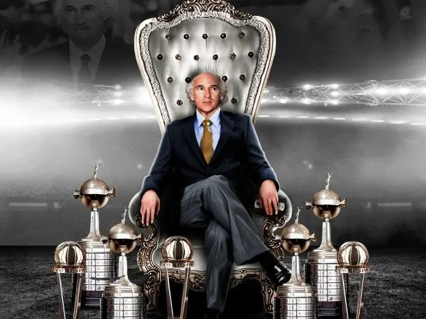
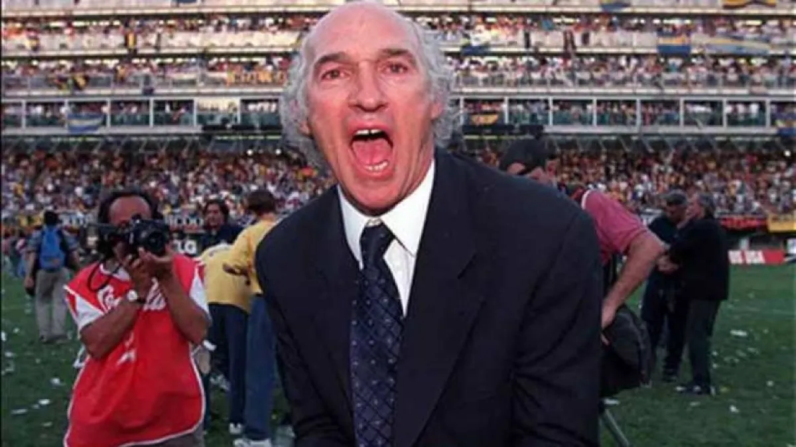
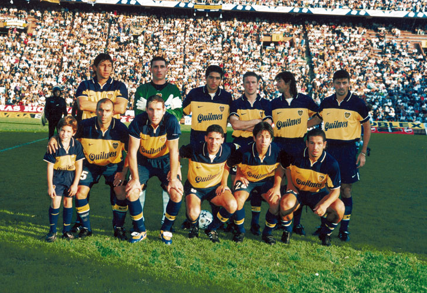
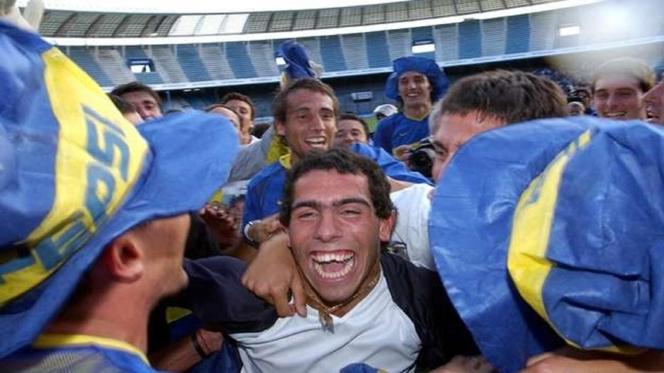
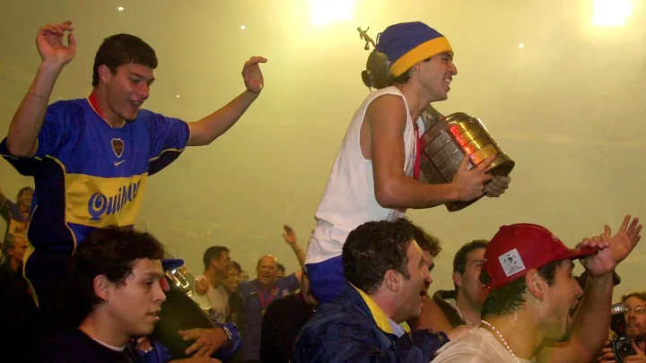
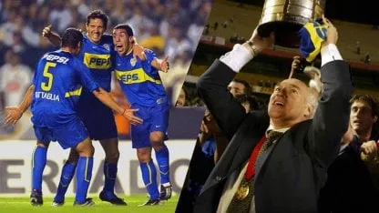

Bienvenidos a la página sobre Carlos Bianchi y sus títulos en Boca Juniors
Esta página está dedicada a los logros de Carlos Bianchi como entrenador de Boca Juniors. Durante su paso por el club, Bianchi conquistó numerosos títulos, incluidos campeonatos locales e internacionales. A continuación, podrás explorar los torneos ganados, sus respectivas finales y los momentos más destacados de su historia en Boca.

ERA DE BIANCHI EN Boca
Torneos Argentinos
Torneo Apertura 1998
Boca se consagró campeón invicto, destacándose por su solidez defensiva. Fue la primera gran racha de Bianchi como DT en Boca.

Torneo Clausura 1999
El bicampeonato llegó en 1999, donde Boca mostró su poderío en el fútbol argentino con Bianchi al mando.

Torneo Apertura 2003
Bianchi cerró el 2003 con un nuevo título local, consolidando uno de los ciclos más exitosos en la historia de Boca.

Copas Libertadores
Copa Libertadores 2000
Boca ganó la Libertadores al vencer al Palmeiras en Brasil, marcando un retorno glorioso en el plano internacional.
Copa Libertadores 2001
Boca volvió a consagrarse campeón de América al derrotar a Cruz Azul en una emocionante definición por penales.

Copa Libertadores 2003
El equipo de Bianchi se impuso con un contundente 5-1 global al Santos, obteniendo su tercer Libertadores.

Copas Intercontinentales
Copa Intercontinental 2000
Vencieron al Real Madrid en Tokio, con dos goles de Martín Palermo, alcanzando la gloria mundial.